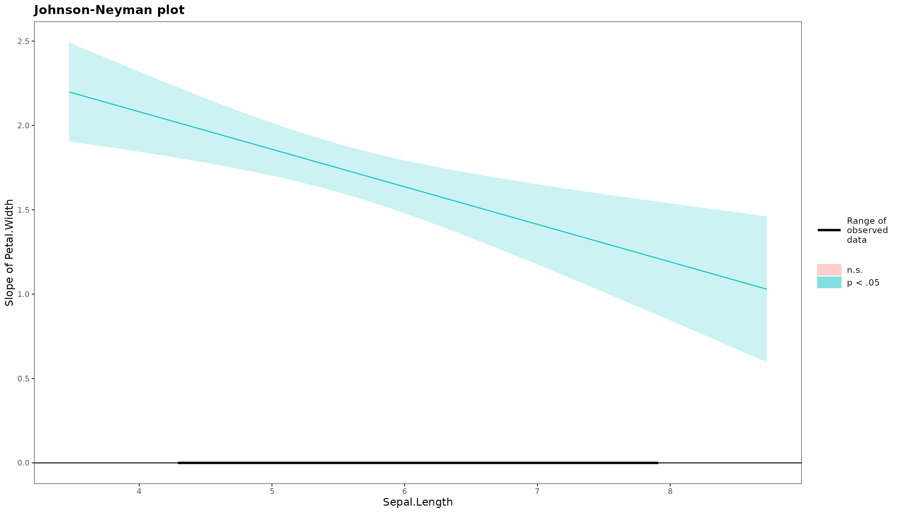
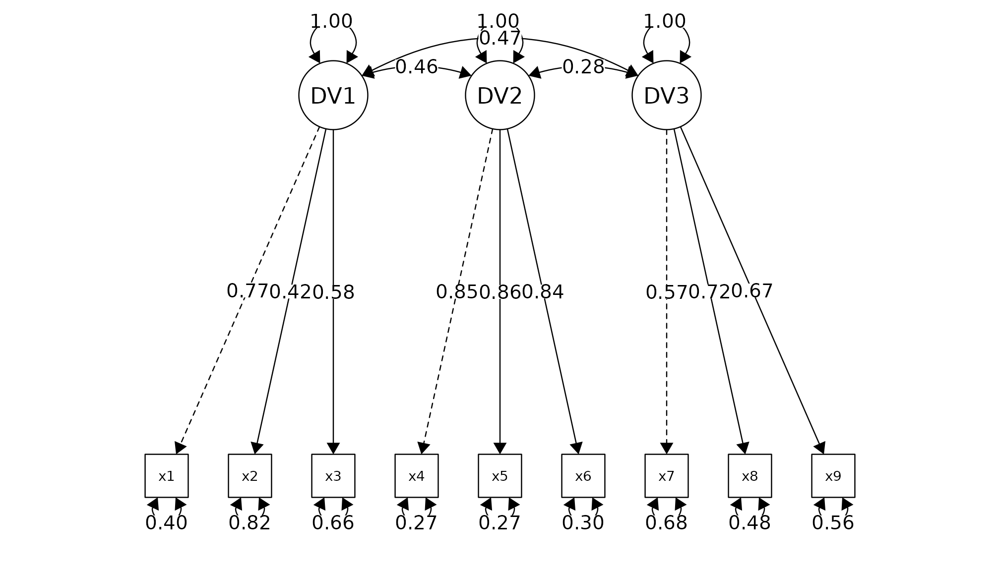

Version Note: Up-to-date with v0.5.0
Why would you want to use this package?
TLDR:
1) It’s a beginner-friendly R package for statistical analysis in social
science.
2) Fitting models, plotting, checking the goodness of fit, and
identifying model assumption violations all in one place.
3) Beautiful and easy-to-read output. Check out this example
now.
Some Examples:
Model Summary
The model_summary function will produce all of the
relevant test statistics for regression models. See an example
below.
mod_1 = lm(data = iris, Petal.Length ~ Petal.Width*Sepal.Length)
# you can also check assumption_plot by setting assumption_plot = TRUE
model_summary(mod_1,assumption_plot = F)
Model Summary
Model Type = Linear regression
Outcome = Petal.Length
Predictors = Petal.Width, Sepal.Length
Model Estimates
────────────────────────────────────────────────────────────────────────────────────────
Parameter Coefficient SE t df p 95% CI
────────────────────────────────────────────────────────────────────────────────────────
(Intercept) -3.248 0.596 -5.451 146 0.000 *** [-4.426, -2.070]
Petal.Width 2.971 0.358 8.291 146 0.000 *** [ 2.263, 3.679]
Sepal.Length 0.876 0.117 7.504 146 0.000 *** [ 0.645, 1.106]
Petal.Width:Sepal.Length -0.222 0.064 -3.485 146 0.001 *** [-0.349, -0.096]
────────────────────────────────────────────────────────────────────────────────────────
*** p < 0.001, ** p < 0.01, * p < 0.05, + p < 0.1
Goodness of Fit
─────────────────────────────────────────────────────────────
AIC AICc BIC R² R²_adjusted RMSE σ
─────────────────────────────────────────────────────────────
148.192 148.608 163.245 0.952 0.952 0.384 0.389
─────────────────────────────────────────────────────────────
Interaction Plot
Since our models have an interaction, we may want to visualize it. Let’s create an interaction plot first. You can modify the plot using some of the settings. You can also try out the polynomial regression plots and the ANOVA plots.
interaction_plot(mod_1,verbose = F) # verbose is set to TRUE by default to show the plot data. 
# You can also modify the
interaction_plot(mod_1,
response_var_name = 'Petal Length', # you can rename the variable names (e.g., getting rid of the dot)
predict_var1_name = 'Petal Width',
predict_var2_name = 'Sepal Length',
predict_var1_level = c(0.44,1.19,1.96), # you may want to show the mean of the variable
predict_var1_level_name = c('-1 SD','Mean','+1 SD'), # you may also want to adjust the labels to be more intuitive
verbose = F)
Simple Slopes
After obtaining the interaction plot, you may also want to get the simple slopes of the interaction.
simple_slope(mod_1)$simple_slope_df
Sepal.Length Level Est. S.E. ci.lower ci.upper t val.
1 Low 1.855359 0.07887932 1.699467 2.011252 23.52149
2 Mean 1.671132 0.07591186 1.521104 1.821160 22.01411
3 High 1.486904 0.10436269 1.280648 1.693161 14.24747
p
1 1.615129e-51
2 3.090242e-48
3 2.027575e-29
$jn_plot
Descriptive Table
This package can also help you in preparing a table that includes
means, standard deviations, and correlations. For additional options,
refer to ?descriptive_table.
descriptive_table(iris,c(Petal.Width,Sepal.Length,Petal.Length))Model Summary
Model Type = Correlation
Model Method = pearson
Adjustment Method = none
─────────────────────────────────────────
Var Petal.Width Sepal.Length
─────────────────────────────────────────
Petal.Width
Sepal.Length 0.818 ***
Petal.Length 0.963 *** 0.872 ***
─────────────────────────────────────────
Note: * p < 0.05, ** p < 0.01, *** p < 0.001
Model Summary
Model Type = Descriptive Statistics
───────────────────────────────────────────────────────
Var mean sd Petal.Width Sepal.Length
───────────────────────────────────────────────────────
Petal.Width 1.199 0.762
Sepal.Length 5.843 0.828 0.818 ***
Petal.Length 3.758 1.765 0.963 *** 0.872 ***
───────────────────────────────────────────────────────
descriptive_table(iris,c(Petal.Width,Sepal.Length,Petal.Length),descriptive_indicator = c('mean','sd','cor','missing','kurtosis')) # you can request more parameters optionallyModel Summary
Model Type = Correlation
Model Method = pearson
Adjustment Method = none
─────────────────────────────────────────
Var Petal.Width Sepal.Length
─────────────────────────────────────────
Petal.Width
Sepal.Length 0.818 ***
Petal.Length 0.963 *** 0.872 ***
─────────────────────────────────────────
Note: * p < 0.05, ** p < 0.01, *** p < 0.001
Model Summary
Model Type = Descriptive Statistics
────────────────────────────────────────────────────────────────────────────
Var missing_n mean sd kurtosis Petal.Width Sepal.Length
────────────────────────────────────────────────────────────────────────────
Petal.Width 0 1.199 0.762 -1.358
Sepal.Length 0 5.843 0.828 -0.606 0.818 ***
Petal.Length 0 3.758 1.765 -1.417 0.963 *** 0.872 ***
────────────────────────────────────────────────────────────────────────────
Cronbach alpha
You can get the Cronbach alphas very simply (it will call the
psych::alpha() function). If you need, you can also get
separate Cronbach alphas by groups (e.g., when using multilevel
analyses).
cronbach_alpha(x1:x3,x4:x6,x7:x9,
var_name = c('visual','textual','verbal'),
data = lavaan::HolzingerSwineford1939)
Model Summary
Model Type = Cronbach Alpha Reliability Analysis
Model Specification:
visual = x1 + x2 + x3
textual = x4 + x5 + x6
verbal = x7 + x8 + x9
───────────────────────────────
Var raw_alpha std_alpha
───────────────────────────────
visual 0.626 0.627
textual 0.883 0.885
verbal 0.688 0.690
───────────────────────────────
cronbach_alpha(x1:x3,x4:x6,x7:x9,
var_name = c('visual','textual','verbal'),
group = 'sex',
data = lavaan::HolzingerSwineford1939)
Model Summary
Model Type = Cronbach Alpha Reliability Analysis
Model Specification:
visual = x1 + x2 + x3
textual = x4 + x5 + x6
verbal = x7 + x8 + x9
────────────────────────────────────
Var sex raw_alpha std_alpha
────────────────────────────────────
visual 1 0.568 0.572
visual 2 0.664 0.663
textual 1 0.872 0.874
textual 2 0.892 0.895
verbal 1 0.697 0.693
verbal 2 0.686 0.697
────────────────────────────────────
Confirmatory Factor Analysis
CFA model is fitted using lavaan::cfa(). You can pass
multiple factor (in the below example, x1, x2, x3 represent one factor,
x4,x5,x6 represent another factor etc.). It will show you the fit
measure, factor loading, and goodness of fit based on cut-off criteria
(you should review literature for the cut-off criteria as the
recommendations are subjected to changes). You can also try
measurement_invariance().
cfa_summary(
data = lavaan::HolzingerSwineford1939,
x1:x3,
x4:x6,
x7:x9
)
Model Summary
Model Type = Confirmatory Factor Analysis
Estimator: ML
Model Formula =
. DV1 =~ x1 + x2 + x3
DV2 =~ x4 + x5 + x6
DV3 =~ x7 + x8 + x9
Fit Measure
─────────────────────────────────────────────────────────────────────────────────────
Χ² DF P CFI RMSEA SRMR TLI AIC BIC BIC2
─────────────────────────────────────────────────────────────────────────────────────
85.306 24.000 0.000 *** 0.931 0.092 0.065 0.896 7517.490 7595.339 7528.739
─────────────────────────────────────────────────────────────────────────────────────
*** p < 0.001, ** p < 0.01, * p < 0.05, + p < 0.1
Factor Loadings
────────────────────────────────────────────────────────────────────────────────
Latent.Factor Observed.Var Std.Est SE Z P 95% CI
────────────────────────────────────────────────────────────────────────────────
DV1 x1 0.772 0.055 14.041 0.000 *** [0.664, 0.880]
x2 0.424 0.060 7.105 0.000 *** [0.307, 0.540]
x3 0.581 0.055 10.539 0.000 *** [0.473, 0.689]
DV2 x4 0.852 0.023 37.776 0.000 *** [0.807, 0.896]
x5 0.855 0.022 38.273 0.000 *** [0.811, 0.899]
x6 0.838 0.023 35.881 0.000 *** [0.792, 0.884]
DV3 x7 0.570 0.053 10.714 0.000 *** [0.465, 0.674]
x8 0.723 0.051 14.309 0.000 *** [0.624, 0.822]
x9 0.665 0.051 13.015 0.000 *** [0.565, 0.765]
────────────────────────────────────────────────────────────────────────────────
*** p < 0.001, ** p < 0.01, * p < 0.05, + p < 0.1
Model Covariances
──────────────────────────────────────────────────────────────
Var.1 Var.2 Est SE Z P 95% CI
──────────────────────────────────────────────────────────────
DV1 DV2 0.459 0.064 7.189 0.000 *** [0.334, 0.584]
DV1 DV3 0.471 0.073 6.461 0.000 *** [0.328, 0.613]
DV2 DV3 0.283 0.069 4.117 0.000 *** [0.148, 0.418]
──────────────────────────────────────────────────────────────
*** p < 0.001, ** p < 0.01, * p < 0.05, + p < 0.1
Model Variance
──────────────────────────────────────────────────────
Var Est SE Z P 95% CI
──────────────────────────────────────────────────────
x1 0.404 0.085 4.763 0.000 *** [0.238, 0.571]
x2 0.821 0.051 16.246 0.000 *** [0.722, 0.920]
x3 0.662 0.064 10.334 0.000 *** [0.537, 0.788]
x4 0.275 0.038 7.157 0.000 *** [0.200, 0.350]
x5 0.269 0.038 7.037 0.000 *** [0.194, 0.344]
x6 0.298 0.039 7.606 0.000 *** [0.221, 0.374]
x7 0.676 0.061 11.160 0.000 *** [0.557, 0.794]
x8 0.477 0.073 6.531 0.000 *** [0.334, 0.620]
x9 0.558 0.068 8.208 0.000 *** [0.425, 0.691]
DV1 1.000 0.000 NaN NaN [1.000, 1.000]
DV2 1.000 0.000 NaN NaN [1.000, 1.000]
DV3 1.000 0.000 NaN NaN [1.000, 1.000]
──────────────────────────────────────────────────────
*** p < 0.001, ** p < 0.01, * p < 0.05, + p < 0.1
Goodness of Fit:
Warning. Poor χ² fit (p < 0.05). It is common to get p < 0.05. Check other fit measure.
OK. Acceptable CFI fit (CFI > 0.90)
Warning. Poor RMSEA fit (RMSEA > 0.08)
OK. Good SRMR fit (SRMR < 0.08)
Warning. Poor TLI fit (TLI < 0.90)
OK. Barely acceptable factor loadings (0.4 < some loadings < 0.7)

Knit to R Markdown
if you want to produce these beautiful output in R Markdown. Calls this function and see the most up-to-date advice.
OK. Required package "fansi" is installed
Note: To knit Rmd to HTML, add the following line to the setup chunk of your Rmd file:
"old.hooks <- fansi::set_knit_hooks(knitr::knit_hooks)"
Note: Use html_to_pdf to convert it to PDF. See ?html_to_pdf for more info
Ending
This conclude my briefed discussion of this package. I hope you enjoy the package, and please let me know if you have any feedback. If you like it, please considering giving a star on GitHub. Thank you.